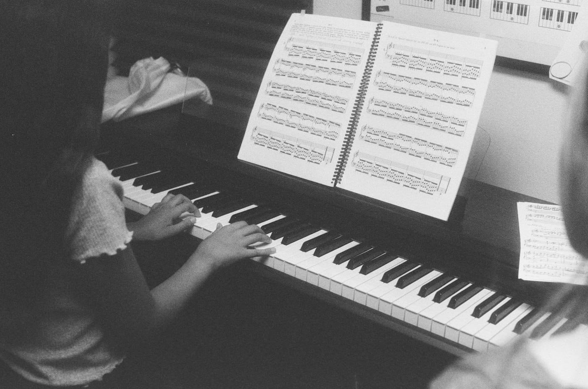

Весенний концерт для всех учеников
Дважды в год ученики выходят на сцену камерного зала. Родители и друзья приходят бесплатно.
14 апреляконцерт младших классов
21 апрелявечер джаза
28 апрелявыпускной вечер

Музыкальная школа для детей от 5 лет и взрослых. Первый урок бесплатно, инструмент на занятиях предоставляем.
Записаться на пробный урокДважды в год ученики выходят на сцену камерного зала. Родители и друзья приходят бесплатно.